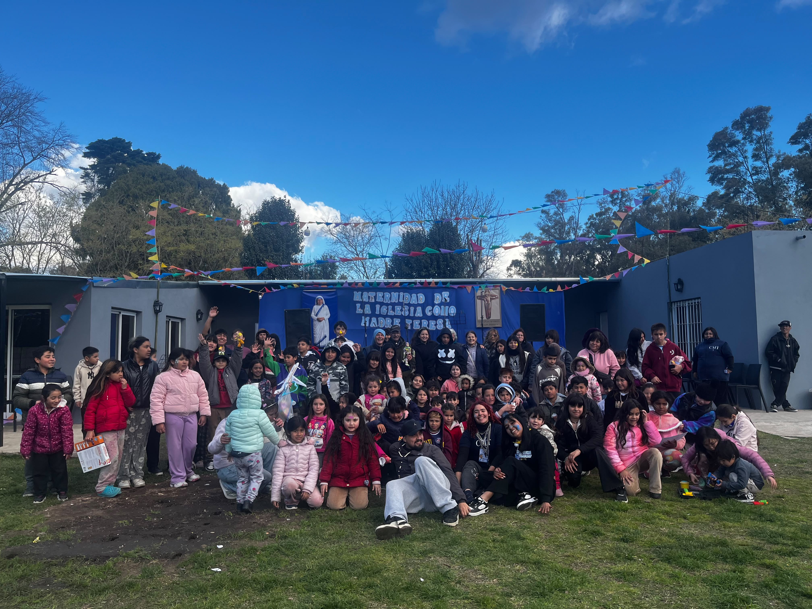
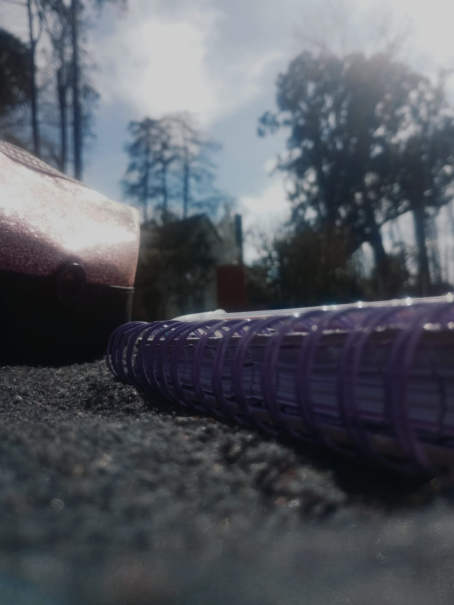

Grupos juveniles
Encuentros para compartir la fe, construir amistades y crecer en comunidad.
En el Centro Madre Teresa compartimos encuentros que nos permiten crecer en la fe, construir amistades y aprender a vivir en comunidad. A través de distintas propuestas, buscamos que cada persona encuentre un espacio para participar, expresarse y compartir con los demás.
Los sábados son una oportunidad para encontrarnos, compartir actividades y fortalecer los vínculos que nos unen como comunidad.
Durante los encuentros se combinan momentos de oración y reflexión con juegos, música, talleres y actividades recreativas. Cada propuesta busca que podamos aprender, disfrutar y crecer junto a otras personas.
Encuentros para compartir la fe, construir amistades y crecer en comunidad.

Un espacio para niños con juegos, deportes, talleres y propuestas para aprender y compartir.

La música como forma de encuentro, expresión y servicio a los demás.

Un espacio de convivencia, estudio y acompañamiento en la vida cotidiana.
Cada actividad es una oportunidad para encontrarnos, aportar nuestros dones y descubrir el valor de compartir. Te invitamos a conocer el Centro Madre Teresa y a descubrir todo lo que podemos construir juntos.